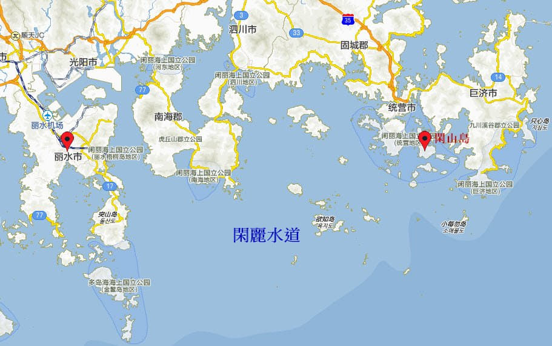
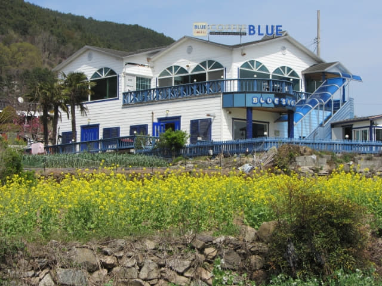

很驚險地在二東面趕及搭乘中午12:05從南海公用客運站開出往泗川市．三千浦的巴士, 沿途巴士好像巡遊般慢慢行駛, 十分悠閒, 我覺得南海才是真真正正的 Slow~~~~~ City, 人情味也很濃, 巴士於下午一時十五分抵達南海郡北面對岸、慶尚南道泗川市．三千浦港旁的 「연륙교.대방사거리」巴士站。
慶尚南道 泗川市．閑麗水道
泗川市在1995年由三千浦市(삼천포시)與泗川郡(사천군)合併而成, 是慶尚南道西南部臨海的一個城市, 位於閑麗水道的中段, 有大大小小的島嶼及跨海大橋, 海洋清澈, 形成非常美麗的景色。

下了車, 我們將會從這裡展開穿過南海四大橋樑 — 三千浦大橋、草養大橋、勒島大橋、昌善大橋, 跨越三島 — 慕開島、草養島、勒島的遠足行程。

泗川市 朝鮮拌飯 (비빔밥 Bibimbap) 午餐
已經是下午一時十五分, 現在最重要是找地方午餐才繼續下午的行程。望望四周, 一點也不熱鬧, 唯有朝三千浦大橋的方向走。
走了一會, 在接近三千浦大橋頭有一間裝修樸素的餐館 – 「茶樂」, 看見門前的圖片菜單頗合胃口, 便立即決定在這裡吃午餐。


推門進入餐廳, 原本想叫門外圖片那兩個菜單, 但老闆娘好像說沒有, 並指著牆上的菜單, 表示今天只供應一種午餐, 沒有選擇, 也不知是什麼, 點了兩客算了。
餐館的裝修和擺設十分傳統。
等了一會, 配菜和主菜都送來了, 原來是朝鮮拌飯, 是韓國過百年歷史的傳統米飯料理。拌飯看來很簡單, 但出奇的好味, 難怪菜餚百年不衰, 仍然那麼受歡迎。結帳每客是 7,000 韓元。
在泗川市三千浦港的「茶樂」餐館 吃完朝鮮拌飯午餐, 休息了一會, 繼續行程。我們首先往三千浦大橋旁的三千浦大橋公園遊覽, 然後才開始穿越南海四大橋樑、跨越三島的遠足行程。
離開餐館, 向前走十多步, 已經看到連接泗川市和慕開島的三千浦大橋, 很美呀! 那是我們第一道穿越的大橋。
沿途經過的咖啡店, 環境相當優美。

三千浦大橋入口就在馬路對面, 我們不急於上橋, 先往三千浦大橋旁的三千浦大橋公園遊覽。
慶尚南道 泗川市 三千浦大橋公園 (삼천포대교공원)
步行一會便抵達三千浦大橋公園。
這裡可眺望三千浦大橋和草養大橋, 景色非常秀麗。
海濱人行步道及公園。
又是戀人聖地。